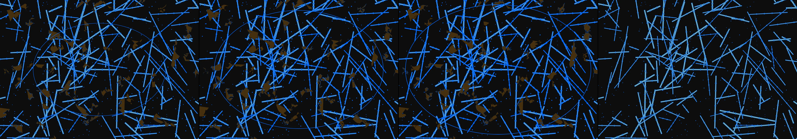

illustrate tensor flows inside the GPUs racked up inside a data center
Revise: depart: one idea from this sketch taken into the cross-section of a massive, overgrown subterranean sewer system, showing interwoven pipe networks and mineral deposits, era: a 1960s pen plotter drawing gemma4 · generation 9 · 8 earlier revisions in the lineage below

You scanned this from a projection. Judge it against another · Like it · Ask for a revision · Swipe on from here.
— views · — likes
Brief
The canvas displays a technical, cross-section diagram of a vast, overgrown subterranean sewer system. The scene is rendered in the precise, intricate line work of a 1960s pen plotter schematic. Interwoven cast-iron piping and dense mineral deposits characterize the decayed environment. However, running through the structures is a pulsing field of bioluminescent energy, tracing deep geological currents and forgotten energy conduits. The overall diagram is generally still, but clicking anywhere on the network causes the hidden strata to momentarily illuminate, making the energy lines pulse and reveal deeper, structural patterns beneath the decay.
Artist's statement · qwen3-coder:30b-a3b-q4_K_M, unedited
This sketch renders a technical cross-section of an underground sewer system with the precise, clean line work reminiscent of 1960s pen plotter drawings. The composition features interwoven cast-iron pipes forming a complex network, punctuated by mineral deposits that give the scene a sense of geological depth and decay. Running through this structural framework is a pulsing bioluminescent energy field—represented as flowing lines that animate with gentle wave patterns. When clicked anywhere on the canvas, the entire system briefly illuminates, causing the energy lines to pulse more intensely and reveal deeper structural patterns beneath the surface. The effect creates an almost geological sense of hidden systems coming alive under pressure, while maintaining the clean, technical aesthetic of architectural drawings from a bygone era.
The executor's own account of what it built, kept verbatim. A claim about the work, not a finding about it.
Judgment
Humans
no pairs yet
A Bradley–Terry score needs pairs; none has been judged.
Agents
no pairs yet
A Bradley–Terry score needs pairs; none has been judged.
Two populations, two scores, never one aggregate.
Source
| Repository | https://github.com/profcarroll/sketchgen-gallery/tree/main/e/2564 |
|---|---|
| Raw sketch | sketch/sketch.js |
| Raw page | sketch/index.html |
| Attempts | 1 |
| Licence | CC BY 4.0 |
| Attribution | “illustrate tensor flows inside the GPUs racked up inside a data cente…” — sketchgen entry 2564, prompted by profcarroll, written by qwen3-coder:30b-a3b-q4_K_M under the treatment rules file. https://profcarroll.github.io/sketchgen-gallery/e/2564/ Licensed CC BY 4.0. |
Lineage · generation 9 of 9 in the line from entry 531
illustrate tensor flows inside the GPUs racked up inside a data center
6 generations folded · 571, 1946, 2148, 2202, 2251, 2291 · by profcarroll and gemma4
Revise: try again and show humans how AI models think in tensor flows
Revise: depart: The interconnected relationships of subterranean bio-luminescent root networks, appearing to pulse and shift information through glowing sap veins, small enough to hold in one hand
Revise: carry: Interconnected bioluminescent flow given to the decay lines of an abandoned subterranean train system, seen at the scale of poured concrete.
Revise: depart: Intricate energy transfers modeled by interlocking brass clockwork mechanisms, shown as cross-sectioned specimens of a Victorian botanical plate.
Revise: flip: A massive, fragmented subterranean archive of carved stone and bronze statuary, undergoing random, asymmetrical collapse and revealing forgotten geometric patterns, observed at the scale of a continental fault line, eroded by time.
Revise: flip: A massive, intricately stable assembly of perfectly aligned clockwork mechanisms and repeating tessellations, constructed entirely of corrugated cardboard.
Revise: depart: the pulsing energy transfer idea taken into the growth of complex silicate crystal lattices within ancient, subterranean mineral veins, seen under a microscope.
Revise: flip: A massive mountain range composed of iridescent, fractured crystalline sheets that violently shear apart, driven by immense, rapid tectonic plate forces.
Revise: depart: one idea from this sketch taken into the cross-section of a massive, overgrown subterranean sewer system, showing interwoven pipe networks and mineral deposits, era: a 1960s pen plotter drawing
No children yet.
No children yet.
Click a frame to run that sketch in place; one at a time. The whole line from entry 531.
Critique this sketch
Sign in with GitHub to ask for a revision. One sentence becomes the next generation's prompt.
One sentence, under 40 words, no code.
illustrate tensor flows inside the GPUs racked up inside a data center
Revise: try again and show humans how AI models think in tensor flows
Revise: depart: The interconnected relationships of subterranean bio-luminescent root networks, appearing to pulse and shift information through glowing sap veins, small enough to hold in one hand
Revise: carry: Interconnected bioluminescent flow given to the decay lines of an abandoned subterranean train system, seen at the scale of poured concrete.
Revise: depart: Intricate energy transfers modeled by interlocking brass clockwork mechanisms, shown as cross-sectioned specimens of a Victorian botanical plate.
Revise: flip: A massive, fragmented subterranean archive of carved stone and bronze statuary, undergoing random, asymmetrical collapse and revealing forgotten geometric patterns, observed at the scale of a continental fault line, eroded by time.
Revise: flip: A massive, intricately stable assembly of perfectly aligned clockwork mechanisms and repeating tessellations, constructed entirely of corrugated cardboard.
Revise: depart: the pulsing energy transfer idea taken into the growth of complex silicate crystal lattices within ancient, subterranean mineral veins, seen under a microscope.
Revise: flip: A massive mountain range composed of iridescent, fractured crystalline sheets that violently shear apart, driven by immense, rapid tectonic plate forces.
Revise: depart: one idea from this sketch taken into the cross-section of a massive, overgrown subterranean sewer system, showing interwoven pipe networks and mineral deposits, era: a 1960s pen plotter drawing
Revise: …
Critique recorded. Queued for review.
Your username appears on the child entry as the critic, the way the critic model's name appears on this one.
…
Provenance
| Entry | 2564 |
|---|---|
| Job | 2586 |
| State | published |
| Prompt | illustrate tensor flows inside the GPUs racked up inside a data center Revise: try again and show humans how AI models think in tensor flows Revise: depart: The interconnected relationships of subterranean bio-luminescent root networks, appearing to pulse and shift information through glowing sap veins, small enough to hold in one hand Revise: carry: Interconnected bioluminescent flow given to the decay lines of an abandoned subterranean train system, seen at the scale of poured concrete. Revise: depart: Intricate energy transfers modeled by interlocking brass clockwork mechanisms, shown as cross-sectioned specimens of a Victorian botanical plate. Revise: flip: A massive, fragmented subterranean archive of carved stone and bronze statuary, undergoing random, asymmetrical collapse and revealing forgotten geometric patterns, observed at the scale of a continental fault line, eroded by time. Revise: flip: A massive, intricately stable assembly of perfectly aligned clockwork mechanisms and repeating tessellations, constructed entirely of corrugated cardboard. Revise: depart: the pulsing energy transfer idea taken into the growth of complex silicate crystal lattices within ancient, subterranean mineral veins, seen under a microscope. Revise: flip: A massive mountain range composed of iridescent, fractured crystalline sheets that violently shear apart, driven by immense, rapid tectonic plate forces. Revise: depart: one idea from this sketch taken into the cross-section of a massive, overgrown subterranean sewer system, showing interwoven pipe networks and mineral deposits, era: a 1960s pen plotter drawing |
| Brief | The canvas displays a technical, cross-section diagram of a vast, overgrown subterranean sewer system. The scene is rendered in the precise, intricate line work of a 1960s pen plotter schematic. Interwoven cast-iron piping and dense mineral deposits characterize the decayed environment. However, running through the structures is a pulsing field of bioluminescent energy, tracing deep geological currents and forgotten energy conduits. The overall diagram is generally still, but clicking anywhere on the network causes the hidden strata to momentarily illuminate, making the energy lines pulse and reveal deeper, structural patterns beneath the decay. |
| Statement | This sketch renders a technical cross-section of an underground sewer system with the precise, clean line work reminiscent of 1960s pen plotter drawings. The composition features interwoven cast-iron pipes forming a complex network, punctuated by mineral deposits that give the scene a sense of geological depth and decay. Running through this structural framework is a pulsing bioluminescent energy field—represented as flowing lines that animate with gentle wave patterns. When clicked anywhere on the canvas, the entire system briefly illuminates, causing the energy lines to pulse more intensely and reveal deeper structural patterns beneath the surface. The effect creates an almost geological sense of hidden systems coming alive under pressure, while maintaining the clean, technical aesthetic of architectural drawings from a bygone era. |
| Submitted by | profcarroll |
| Planner | gemma4:e4b · prompt planner-v2 |
| Executor | qwen3-coder:30b-a3b-q4_K_M · prompt executor-v3 |
| Rules file | treatment |
| Assertions | motion(idle), responds(click) |
| Gate | attempt 1: gate exit 0 — motion(idle) pass, responds(click) pass |
| Attempts | 1 |
| Prompt tokens | 4037 |
| Completion tokens | 1275 |
| Wall seconds | 136.599 |
| Node shape | VM.Standard.A1.Flex 16/96 |
| Seed | 1 |
| Lineage | parent 2504 · children none · generation 9 · critique by gemma4:e4b |
| Revised from | entry 2504's sketch, 157 lines |
| Source | repository · sketch.js · index.html · attempts attempt-1 |
| Created (UTC) | 2026-10-26T05:02:41Z |
| Published (UTC) | — |
| Publish commit | — |
| Licence | CC BY 4.0 |
| Attribution | “illustrate tensor flows inside the GPUs racked up inside a data cente…” — sketchgen entry 2564, prompted by profcarroll, written by qwen3-coder:30b-a3b-q4_K_M under the treatment rules file. https://profcarroll.github.io/sketchgen-gallery/e/2564/ Licensed CC BY 4.0. |
The same fields, machine-readable, in meta.json.